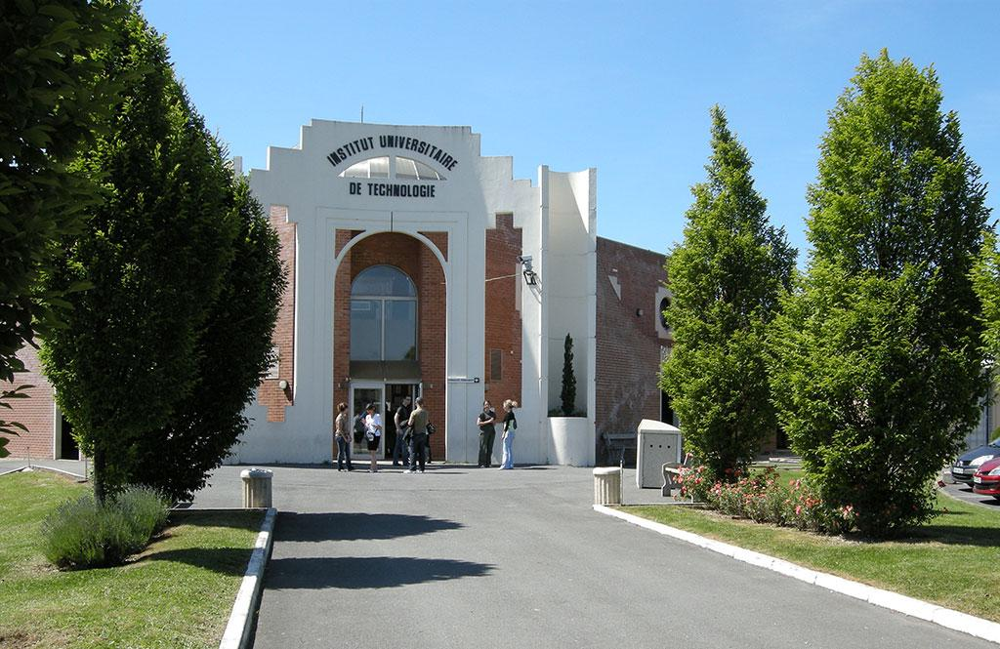
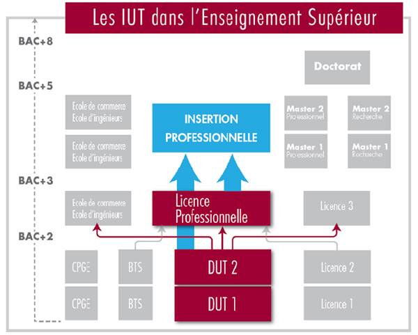

Les Instituts Universitaires de Technologie sont répartis sur tout le territoire Français et sont au
nombre de 115, ce qui assure un fort ancrage dans l'environnement économique local et régional.
Des rencontres entre directeurs de département des IUT assurent la cohérence nationale de l'enseignement.
L'IUT a une qualité d'enseignement universitaire reconnue et plébiscitée par les entreprises depuis plus de 40 ans,
grâce à la mise en place de programmes adaptés à la réalité professionnelle et à la création de diplômes répondant
à l'apparition de nouveaux métiers.
Les formations couvrant la plupart des secteurs (secondaire et tertiaire)
et proposant la collaboration de professionnels font la force et le succès
des IUT, et permettent de fait aux étudiants de trouver un travail dans les
6 mois suivant la délivrance du diplôme.
Cette diversification des diplômes et des formations amène à mettre en place
des modes pédagogiques différents, qui conviennent ainsi à un plus grand nombre
d'étudiants et de professionnels souhaitant reprendre des études ou faire une validation
de l'expérience (VAE).
En outre, les IUT, en partenariat avec des universités étrangères, proposent des poursuites
d'études à l'étranger, ainsi que des stages.
